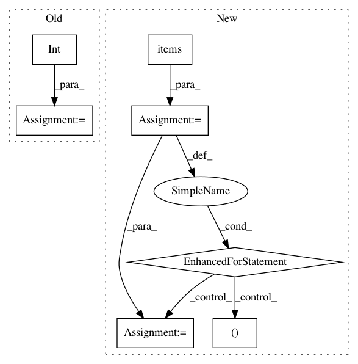

fa45ec5a9f63e2af4bd4823be6af8cd4ac782350,grid/app/main/events/sfl/fl_events.py,,cycle_request,#Any#Any#,165
Before Change
worker_id = data.get(MSG_FIELD.WORKER_ID, None)
name = data.get(MSG_FIELD.MODEL, None)
version = data.get(CYCLE.VERSION, None)
ping = int(data.get(CYCLE.PING, None))
download = float(data.get(CYCLE.DOWNLOAD, None))
upload = float(data.get(CYCLE.UPLOAD, None))
// Retrieve the worker
After Change
requires_speed_fields = requires_speed_test(name, version)
// Check and save connection speed to DB
for request_field, db_field in fields_map.items():
if request_field in data:
value = data.get(request_field)
if not isinstance(value, (float, int)) or value < 0:
raise PyGridError(
f""{request_field}" needs to be a positive number"
)
setattr(worker, db_field, float(value))
elif requires_speed_fields:
// Require fields to present when FL model has speed req"s
raise PyGridError(f""{request_field}" is required")
worker_manager.update(worker) // Update database worker attributes
// The last time this worker was assigned for this model/version.
last_participation = processes.last_cycle(worker_id, name, version)
In pattern: SUPERPATTERN
Frequency: 3
Non-data size: 7
Instances
Project Name: OpenMined/Grid
Commit Name: fa45ec5a9f63e2af4bd4823be6af8cd4ac782350
Time: 2020-07-22
Author: 12518480+vvmnnnkv@users.noreply.github.com
File Name: grid/app/main/events/sfl/fl_events.py
Class Name:
Method Name: cycle_request
Project Name: ilastik/ilastik
Commit Name: c8105b3974fba93097bd28e5ae14a27e5f56c857
Time: 2013-03-14
Author: bergs@janelia.hhmi.org
File Name: ilastik/applets/objectExtraction/objectExtractionSerializer.py
Class Name: SerialObjectFeaturesSlot
Method Name: deserialize
Project Name: ilastik/ilastik
Commit Name: c8105b3974fba93097bd28e5ae14a27e5f56c857
Time: 2013-03-14
Author: bergs@janelia.hhmi.org
File Name: ilastik/applets/objectExtraction/objectExtractionSerializer.py
Class Name: SerialLabelImageSlot
Method Name: deserialize